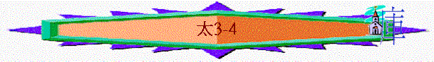

|
天 國 君 王 |
||||||||||
|
出生 |
初露 |
事工 |
被棄 |
憐恤 |
培訓 |
對答 |
責備 |
忍受 |
復活 |
吩咐 |
|
1-2 |
3-4 |
5-10 |
11-13 |
14-15 |
16-18 |
19-22 |
23-25 |
26-27 |
28 |
|
二.光芒的初露(3-4)
∼3至4章講及長大了的耶穌正式開始預備踏上傳道的道路，而從人間使者與靈界使者中可顯出祂王者光芒的初露風範
1.從人間使者顯出祂的超越(3)
「那時，有施洗的約翰出來，在猶太的曠野傳道，說：「天國近了，你們應當悔改！」這人就是先知以賽亞所說的。他說：「在曠野有人聲喊著說：預備主的道，修直他的路！」」3:1-3
「萬軍之耶和華說：「我要差遣我的使者在我前面預備道路。你們所尋求的主必忽然進入他的殿；立約的使者，就是你們所仰慕的，快要來到。」」瑪3:1
∼施洗約翰的出現，應驗舊約的預言，他是神的使者，主要工作是要預備彌賽亞第一次降臨的道路，而他又如何預備呢？
A.先鋒的工作
a.令人悔改歸於真神
「那時，耶路撒冷和猶太全地，並約但河一帶地方的人，都出去到約翰那裡，承認他們的罪，在約但河裡受他的洗。約翰看見許多法利賽人和撒都該人也來受洗，就對他們說：「毒蛇的種類！誰指示你們逃避將來的忿怒呢？你們要結出果子來，與悔改的心相稱。」3:5-8
「他必有以利亞的心志能力，行在主的前面，叫為父的心轉向兒女，叫悖逆的人轉從義人的智慧，又為主預備合用的百姓。」路1:17
∼人要相信耶穌，第一件事情，必須是看到自己的罪，並悔改，施洗約翰主要的工作就是如此了，斥責人的不義，猶太人以為自己是亞伯拉罕的後裔，就可免去審判，但約翰卻要他們看到自己的罪惡，並悔改，讓他們再認識主時，可以虛心相信祂，得著救恩！
b.預備合主所用百姓
「再次日，約翰同兩個門徒站在那裡。他見耶穌行走，就說：「看哪！這是神的羔羊！」兩個門徒聽見他的話，就跟從了耶穌。」約1:35-37
「聽見約翰的話跟從耶穌的那兩個人，一個是西門彼得的兄弟安得烈。」約1:40
∼第二件工作，是為主預備合用的百姓；而事實上，施洗約翰也介紹他的門徒----安得烈與其他人認識耶穌，後來也跟了主，成為主所用的百姓
c.見證主基督的超越
「我是用水給你們施洗，叫你們悔改。但那在我以後來的，能力比我更大，我就是給他提鞋也不配。他要用聖靈與火給你們施洗。」3:11
(1)身份更大
∼就是給他提鞋，施洗約翰也不配
(2)能力更大
(A)潔淨的能力
∼約翰是用水施洗，但主是用靈與火施洗，世間的洗禮是一種禮儀，表明受浸人的認信與決心，例如他們相信施洗約翰所講的道，並決心改過，成為真正的屬神子民，這洗禮是悔改的洗禮，是十分有意義的，但不能除掉罪，罪惡仍在人心中，捆綁人，但主來到世間，可用聖靈如火煉淨人的心，可以洗淨人的一切罪，使人有更新的生命，主的潔淨能力明顯超越約翰。
(B)審判能力
「他手裡拿著簸箕，要揚淨他的場，把麥子收在倉裡，把糠用不滅的火燒盡了。」3:12
∼昔日很多人認為他們是神的子民，但主來到世間，要分別那些才是真正的天國子民，那些根本仍在罪中，將來要受到烈火的審判
B.受浸的見證
a.主的見證
「當下耶穌從加利利來到約但河，見了約翰，要受他的洗。約翰想要攔住他，說：「我當受你的洗，你反倒上我這裡來嗎？」耶穌回答說：「你暫且許我，因為我們理當這樣盡諸般的義（或作：禮）。」於是約翰許了他。」3:13-15
∼主耶穌本身是沒有罪的，祂為何要受洗呢？聖經說要盡諸般的義(義或作禮)，耶穌來到世間，祂要與祂的弟兄相同，沒有因為自己是神的兒子，就廢掉人間律法，人間的義，人間美好的事情，受洗是表明自己人生要過一個無罪的生活，主也願意盡人的本份，作這美好的見證。
b.約翰的見証
∼約翰想攔阻主的行動，因他知道面前的人乃是基督，他當受祂的洗
c.聖靈的見證
「耶穌受了洗，隨即從水裡上來。天忽然為他開了，他就看見神的靈彷彿鴿子降下，落在他身上。」3:16
「耶和華的靈必住在他身上，就是使他有智慧和聰明的靈，謀略和能力的靈，知識和敬畏耶和華的靈。」賽11:2
「我先前不認識他，只是那差我來用水施洗的、對我說：『你看見聖靈降下來，住在誰的身上，誰就是用聖靈施洗的。』我看見了，就證明這是神的兒子。」」約1:33-34
∼聖靈降臨在主身上，印證祂是神的兒子，也加添祂能力、智慧、知識，開展前面事奉
d.父神的見証
「從天上有聲音說：「這是我的愛子，我所喜悅的。」」3:17
2.從靈界使者顯出祂的得勝(4:1-11)
「當時，耶穌被聖靈引到曠野，受魔鬼的試探。」太4:1
∼魔鬼原來是天上的使者，但後來驕傲不順服神，成為撒但(敵擋者)，從撒但試探主，可看出主的得勝
A.受試探的原因
「他自己既然被試探而受苦，就能搭救被試探的人。」來2:18
「因我們的大祭司並非不能體恤我們的軟弱。他也曾凡事受過試探，與我們一樣，只是他沒有犯罪。」來4:15
∼耶穌要開展祂的工作，將祂的百姓從罪惡拯救出來；但在未展開工作時，祂受聖靈的引導到曠野受魔鬼的試探
∼要真正幫助受試探的人，必須明白他們及給他們有得勝保証，主作為地上的人，也選擇與祂的弟兄一樣，經歷試探，但祂終得勝，所以祂是得勝而明白人軟弱的主，有資格幫助在罪�堛漱H！
B.受試探的考驗
a.世界的吸引
「因為凡世界上的事，就像肉體的情慾，眼目的情慾，並今生的驕傲，都不是從父來的，乃是從世界來的。」約壹2:16
(1)肉體的情慾
「他禁食四十晝夜，後來就餓了。那試探人的進前來，對他說：「你若是神的兒子，可以吩咐這些石頭變成食物。」」4:2-3
(2)今生的驕傲
「魔鬼就帶他進了聖城，叫他站在殿頂（頂原文作翅）上，對他說：「你若是神的兒子，可以跳下去，因為經上記著：主要為你吩咐他的使者用手托著你，免得你的腳碰在石頭上。」」4:5-6
∼當耶穌跳下去時，顯出祂的超卓，使者也托著祂，為何不跳！
(3)眼目的情慾
「魔鬼又帶他上了一座最高的山，將世上的萬國與萬國的榮華都指給他看，對他說：「你若俯伏拜我，我就把這一切都賜給你。」」4:8-9
b.使命的催逼
∼祂來到世間，為要証明自己是君王，彌賽亞，擁有權柄，也應驗聖經所說的話，並使萬人都歸信祂
(1)權柄可顯露
∼若祂吩咐石頭變食物，祂就可顯出祂王者的權柄，為何不吩咐！
(2)王者可突出
∼若祂跳下來，必有很多人見到祂，天使也托著祂，豈不是可顯露祂王者的身份，為何不跳！
(3)萬國盡歸手
∼只要簡單向撒但拜一拜，萬國也屬祂，為何不拜呢！
C.終得勝的方法
a.每天儆醒
∼當時耶穌被引到曠野，祂不知道魔鬼幾時試探祂，可能是第一日，可能是第二日，或兩個月後，若不是每天儆醒度日，預備面對試探，隨時可以落入鬆懈而跌入魔鬼的網羅中
b.時刻想神
「耶穌卻回答說：「經上記著說：人活著，不是單靠食物，乃是靠神口裡所出的一切話。」」4:4
「耶穌對他說：「經上又記著說：『不可試探主你的神。』」」4:7
「耶穌說：「撒但（撒但就是抵擋的意思，乃魔鬼的別名），退去吧！因為經上記著說：當拜主你的神，單要事奉他。」」4:10
∼面對肉體需要，祂想起人活著乃靠神所說的話，面對是否跳下去，祂想起不可試探神，面對萬國的榮華，祂想起單要事奉神….祂不是想起自己的慾望與需要，而是想起神，神如何想，神的屬性，吩咐，至終令祂得勝
c.熟練聖經
∼撒但也斷章取義引用聖經，但耶穌每次面對，也引用申命記的說話，若不熟練，如何與撒但應對
d.絕不妥協
∼祂可以因為肚餓，稍為體恤自己，也可以因魔鬼引用的經文如此行，但對於絕對真理，祂每一次，也沒有妥協，立場堅定
D.得勝後的結果
「於是，魔鬼離了耶穌，有天使來伺候他。」4:11
a.魔鬼的敗退
b.天使的伺候
∼更顯出祂得勝，超越的地方，連天使也伺候祂！
3.從百姓跟從顯出祂的吸引(4:12-25)
A.真光的初露
「後又離開拿撒勒，往迦百農去，就住在那裡。那地方靠海，在西布倫和拿弗他利的邊界上。這是要應驗先知以賽亞的話，說：西布倫地，拿弗他利地，就是沿海的路，約但河外，外邦人的加利利地，那坐在黑暗裡的百姓看見了大光；坐在死蔭之地的人有光發現照著他們。」4:13-16
∼主為何可顯露?
a.因應驗聖經的話
b.因傳講天國的道
「從那時候，耶穌就傳起道來，說：「天國近了，你們應當悔改！」」4:17
B.門徒的跟從
a.即時撤下的跟從
「耶穌在加利利海邊行走，看見弟兄二人，就是那稱呼彼得的西門和他兄弟安得烈，在海裡撒網；他們本是打魚的。耶穌對他們說：「來跟從我，我要叫你們得人如得魚一樣。」他們就立刻捨了網，跟從了他。」4:18-20
「從那裡往前走，又看見弟兄二人，就是西庇太的兒子雅各和他兄弟約翰，同他們的父親西庇太在船上補網，耶穌就招呼他們，他們立刻捨了船，別了父親，跟從了耶穌。」4:21-22
∼主呼召西門、安得烈、雅各、約翰，他們的反應是立刻，即刻行上的，這行上是要撤下
(1)原先工作
(2)所愛家人
(3)居住家鄉
b.更有價值的回報
「耶穌對他們說：「來跟從我，我要叫你們得人如得魚一樣。」」4:19
∼「得人」與「得魚」那個更有意義，更有永恆價值呢？他們肯定知道是「得人」！能令人有生命，有永生，一定是更有意義的！
∼而「得人如得魚一樣」表示可以那麼多，那麼真實，事實上後期在使徒行傳中，他們一次佈道而引領二三千人相信主！
C.百姓的回應
a.主的名聲被傳開
「耶穌走遍加利利，在各會堂裡教訓人，傳天國的福音，醫治百姓各樣的病症。他的名聲就傳遍了利亞。那裡的人把一切害病的，就是害各樣疾病、各樣疼痛的和被鬼附的、癲癇的、癱瘓的，都帶了來，耶穌就治好了他們。」4:23-24
b.許多百姓也跟祂
「當下，有許多人從加利利、低加波利、耶路撒冷、猶太、約但河外來跟著他。」4:25